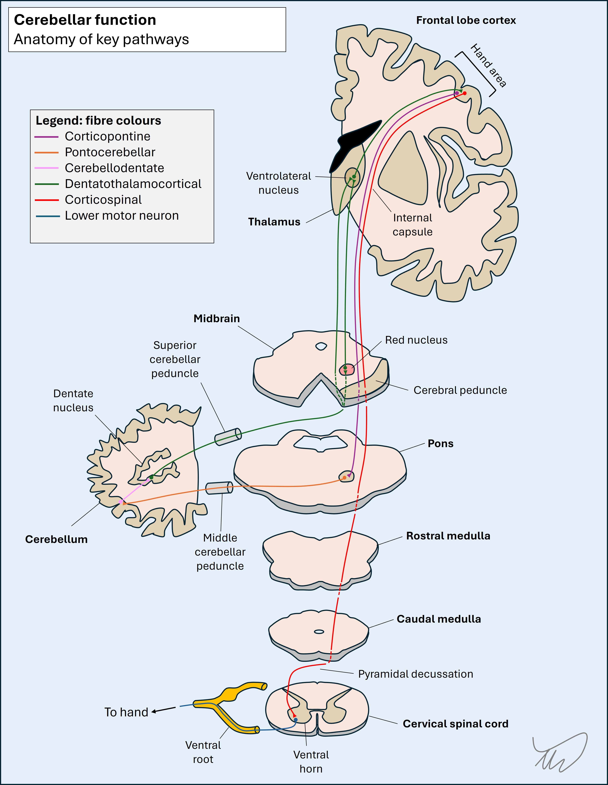

Case 15 - Dizziness and clumsiness
Where is the lesion?
The symptoms here are vertigo, gait difficulty and lateralised upper limb coordination problems. In isolation each of these symptoms could reflect a variety of causes, but in combination they suggest a problem in the posterior fossa - affecting the cerebellum. Vertigo is often seen in acute cerebellar pathologies.
The ataxic signs on examination are also supportive, and while the broad-based gait can reflect central (i.e. midline) cerebellar pathology, the left upper limb features lateralise to the left cerebellar hemisphere, its subcortical regions, or the middle (afferent) or superior (efferent) cerebellar peduncles on the left. Cerebellar signs in limbs are ipsilateral to the side of the cerebellum affected, because the pathway crosses from brain to cerebellum, crosses back to return to the brain, then crosses again in the motor tracts travelling to the limbs.
To see this, look at the diagram below - start with the purple (corticopontine) fibres in the left hemipshere.

So there is likely to be a lesion in the left cerebellum or its projections in the brainstem. There are no other signs to suggest a brainstem syndrome – for example an eye movement problem or sensory disturbance – which makes it less likely, as these other tracts and nuclei are near the cerebellar pathways – though it is still possible.
What is the lesion?